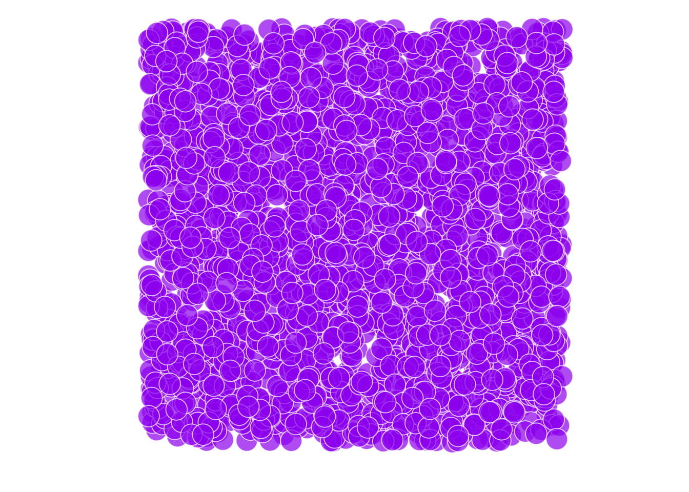
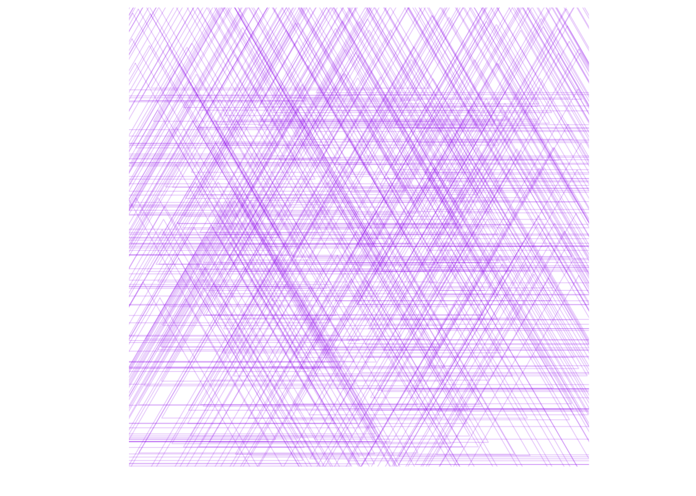
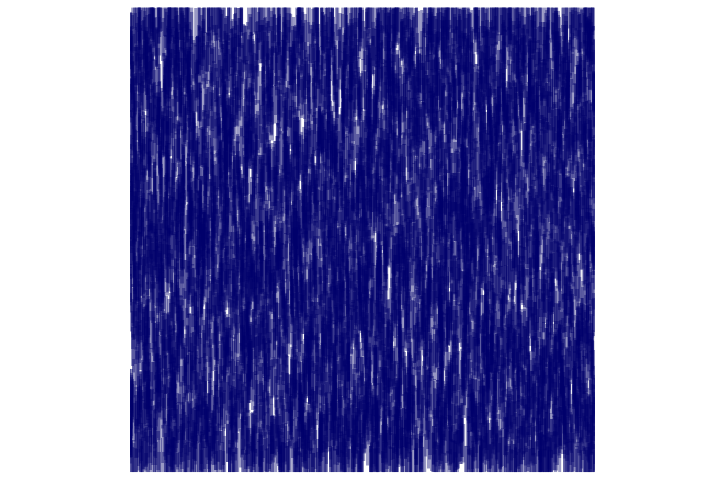

Chapter 17 Textures
library(readxl)
n = 2500
df = data_frame(x = runif(n, -3, 4), y = runif(n, -3, 4),
shape = sample(c("A", "B", "C", "D"), n, replace = T))
size = 7
alpha = .7
ggplot(df, aes(x,y)) +
geom_point(size = size, alpha = alpha, col = "white", fill = "purple", shape = 21) +
# scale_x_continuous(limits = c(0,1.25), expand = c(0,0) ) +
# scale_y_continuous(limits = c(0,1.25), expand = c(0,0) ) +
theme_classic() +
coord_equal() + xlab("") + ylab("")+
theme(axis.text = element_blank(),
axis.ticks = element_blank(),
axis.line = element_blank())
n = 10000
df = data_frame(x = runif(n, -3, 4),
y = runif(n, -3, 4),
shape = sample(c("A","B", "C", "D"),
n, replace = T))
size = 70
alpha = .2
ggplot(df, aes(x, y, shape = shape)) +
geom_point(size = size, alpha = alpha, col = "purple", shape = 2) +
scale_x_continuous(limits = c(0,1.25), expand = c(0,0) ) +
scale_y_continuous(limits = c(0,1.25), expand = c(0,0) ) +
theme_classic() +
coord_equal() + xlab("") + ylab("")+
theme(axis.text = element_blank(),
axis.ticks = element_blank(),
axis.line = element_blank())
n = 300000
x_lim = c(0,1)
y_lim = c(0,1)
df = data_frame(x = runif(n, -3, 4), y = runif(n, -3, 4), shape = sample(c("A","B", "C", "D"), n, replace = T))
alpha = .4
size = 10
ggplot(df, aes(x,y)) +
geom_point(shape = "|", size = size, alpha = alpha, col = "navyblue") +
scale_x_continuous(limits = c(0,1.25), expand = c(0,0)) +
scale_y_continuous(limits = c(0,1.25), expand = c(0,0) ) +
theme_classic() +
coord_equal() + xlab("") + ylab("")+
theme(axis.text = element_blank(),
axis.ticks = element_blank(),
axis.line = element_blank())